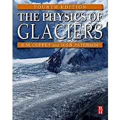

Group Seminar

In this seminar, we give presentations about our own research. Newcomers to our group talk about their BSc research or previous experience. Sometimes, guest researchers or OB/OG give talks as well.
Held irregularly in the ILTS auditorium, lecture room or conference room.
| Date | Presenter | Title |
| 7/23 10:00~ |
Yoshinori Iizuka | |
| Kaoru Kawakami | ||
| Ralf Greve | A multi-phase spin-up method for the Greenland ice sheet, and its influence on future changes of the ice sheet |
|
| 7/16 10:00~ |
Shuntaro Hata | |
| Ryo Kusaka | ||
| Masahiro Minowa | ||
| 7/9 10:00~ |
Mai Matsumoto | |
| Shun Shinohara | ||
| 7/2 10:00~ |
Shin Sugiyama | Ice speed of a Greenlandic tidewater glacier modulated by tide, melt, and rain |
| Takuro Imazu | Fieldwork in Svalbard and remote sensing of glacier lake |
|
| Jia-Yan Chang | Terminus dynamics of Taku Glacier, Alaska, during the transition from advance to retreat |
|
| 6/25 10:00~ |
Hiroto Sakata | Spatiotemporal reconstruction of accumulation rate in the southeast dome of Greenland ice sheet using ground penetrating radar |
| Soratakto Yamada | Drone survey on Qaanaaq Glacier, northwestern Greenland, for studying surface elevation change and supraglaci al stream development |
|
| 6/18 10:00~ |
Takako Toyoyama | Ice flow and basal layer flow beneath ice sheet |
| Félix Grandadam | Storm induced instabilities in the Bay of Biscay |
|
| 6/11 10:00~ |
Kotaro Yazawa | Biomass estimation of Benthosema pterotum in Kagoshima Bay, using acoustic method |
| Mizuki Hirano | Metamorphism interpreted from zircon inclusions in ultrahigh-temperature (UHT) metamorphic rocks from East Antarctica |
Reading Circle

For studying basics of glacier physics, we hold this reading circle.
Textbook is the most popular one about glacier physics, The Physics of Glaciers (4th. ed.) by Cuffey & Paterson.
Presenter read each part, explain to participants.
All participants join discussion, deepen their understandings.
§1. Introduction
§2. Transformation of Snow to Ice
§4. Mass Balance Processes
§15. Ice Core Studies
§8. The flow of Ice Masses
Journal Seminar
Graduate students in the course of Cryosphere introduce recent paper related to their own research theme.
MSc students: twice a year
PhD students: once a year
#Irregularly Friday,
@Lecture room, ILTS.